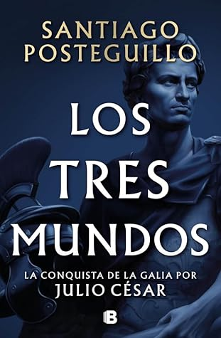

Los tres mundos (Julio César, #3)
Reseña por Jorge I. Zuluaga

Ver reseña en GoodReads (necesita cuenta)
Después de leer todo (¿o se me habrá escapado algo?) lo que ha salido de la pluma de Posteguillo, me sigue sorprendiendo, muy gratamente, que el nivel y el estilo se mantengan tan altos y tan fieles a los que he podido disfrutar desde la primera novela que leí de este autor.
De los tres libros de la saga de Julio César, este es sin duda alguna aquel que tiene más acción, al menos en el sentido al que nos tiene acostumbrados Posteguillo con sus novelas de la antigua Roma. «Los tres mundos» recrea el mayor número de batallas y algunos de los encuentros militares más emocionantes de toda la saga. Esta es también la novela que nos muestra, al fin, al Julio César de los libros y la cultura popular: el militar visionario, el guerrero de sangre fría y, en cierto modo, el megalómano con aspiraciones dictatoriales del que tanto se ha quejado la historiografía. No es que no haya disfrutado de conocer al otro Julio César, al hijo, al esposo, al padre, al abogado, al aprendiz de militar, al político, al conspirador, al rebelde que abraza las causas populares; en fin, al personaje complejo que nos ha dibujado Posteguillo en las otras dos novelas; pero es cierto que ya me estaba haciendo falta conocer en pleno el lado más conocido de este personaje.
A pesar de lo dicho, sin embargo, no todo son batallas en «Los tres mundos»; no todo son negociaciones con traicioneros jefes tribales, campamentos y estrategias militares, ciudades sitiadas y naufragios. Como muy bien nos tiene acostumbrados Posteguillo, y un aspecto en el que insisto no ha bajado ni un ápice su nivel a lo largo de tantas novelas, la acción en la novela salta de forma magistral entre los tres (o cuatro) escenarios geográficos y humanos en los que se desarrolla la historia: las Galias, Roma y Alejandría. (Me quedan en la enumeración las islas británicas, que tienen aquí también su protagonismo).
La historia de la princesa Cleopatra y de las conjuras de su padre, hermanas y hermanos alrededor del trono de Egipto me gustaron muchísimo. No solo porque soy un Kemet lover, sino porque de todos los reinos exóticos que Posteguillo nos ha traído a través de sus novelas y del andar de los personajes que ha retratado —Partia, Armenia, Dacia, Seres (China), Kushan (India), etc.—, Egipto es el que faltaba por recrear en mayor detalle. ¡Y de qué modo lo está haciendo Posteguillo! (lo digo en presente porque espero que en las próximas novelas de la saga la historia de los últimos años del Egipto faraónico se profundice más).
El personaje de Marco Antonio, y su incipiente historia de amor con Cleopatra, me gustó muchísimo. Este es uno de los personajes de la novela que más atrajo mi atención. Por supuesto que Posteguillo quería eso, que nos sintiéramos atraídos por un Marco Antonio desconocido, que conociéramos más a fondo su historia; creo que lo logra y lo hace magistralmente. Me sorprendió, por ejemplo, descubrir que Marco Antonio fue un personaje con una historia de vida compleja y tal vez bastante única que posiblemente ameritaría una novela aparte.
Amé también el regalo que nos dejó Posteguillo al incluir un cameo de dos personajes inconfundibles. Creo que la mayoría los reconocerá cuando llegue al respectivo aparte de la novela. Ya me había pasado en novelas históricas de otros autores y no puedo pensar en algo más satisfactorio para el autor y sus lectores que jugar de esta manera con el tiempo y con dominios separados de la realidad literaria: el de la Historia en mayúscula y el de la ficción. ¡Espero que encuentren el pasaje y a los personajes, y lo disfruten tanto como yo lo hice!
En resumidas cuentas, Posteguillo lo hizo otra vez; ya lo he dicho tantas veces que creo que jubilaré la expresión, porque no me cabe la menor duda: este autor lo seguirá haciendo por un buen rato.
Quedamos a la espera de la continuación de la historia. Serán seguramente otro par de años de abstinencia, meses sin tener el placer de ser arrastrados por la brillante y entretenida pluma de Posteguillo. ¡Que valga la pena la espera!